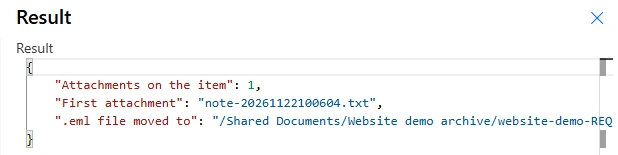

- Power Automate
- Level 7 · Files, email and documents · 7 of 7
SharePoint attachments, folders and moving files
Lists and libraries store files in two different ways. A list item can carry attachments. A library holds files in folders. The SharePoint connector has actions for both.
The demo


List item attachments
| Action | Inputs |
|---|---|
| Add attachment | Site, list, item ID, file name and content |
| Get attachments | Site, list, item ID. Returns name, ID and link for each |
| Get attachment content | The attachment ID, to read or forward the file |
To send every attachment of a request in a status email, loop over Get attachments, read each one's content, and build an attachments array with Append to array variable: {"Name": ..., "ContentBytes": ...}. Then pass the array to Send an email.
Folders and moving files
| Need | Action |
|---|---|
| Create a folder (including nested paths such as 2026/November) | Create new folder |
| Move a file (to another folder, library or site) | Move file: source file ID, destination site and folder, and what to do if the name exists |
| Copy a file | Copy file: same inputs; the original stays |
| Move a whole folder | Move folder |
Moving keeps the file's version history; downloading and re-uploading doesn't. Moves between sites can take several seconds (9 seconds in the demo), so don't read the file at its new location in the very next step without checking the action succeeded.
New to this? Start from the basics optional
File identifier: the ID that file actions use, returned by Create file, Get files and the file triggers. It is not the item ID number.
Name conflict behaviour: fail, replace, or keep both by adding a number to the name.
Build it step by step optional
- To archive files monthly, add Create new folder with a path such as
concat('Archive/', formatDateTime(utcNow(), 'yyyy-MM')). - Add Get files (properties only) with a filter for the files to move.
- Loop over them and add Move file: the file identifier, the same site, the new folder, and Copy with a new name for conflicts.
- Run it on a test library first and check that version history moved with the files.
Common mistakes
- Passing the item ID where a file identifier is expected.
- Attachments on list items for large documents. A document library with metadata is easier to search and manage.
- Creating a folder that already exists inside a loop. Create it once before the loop.